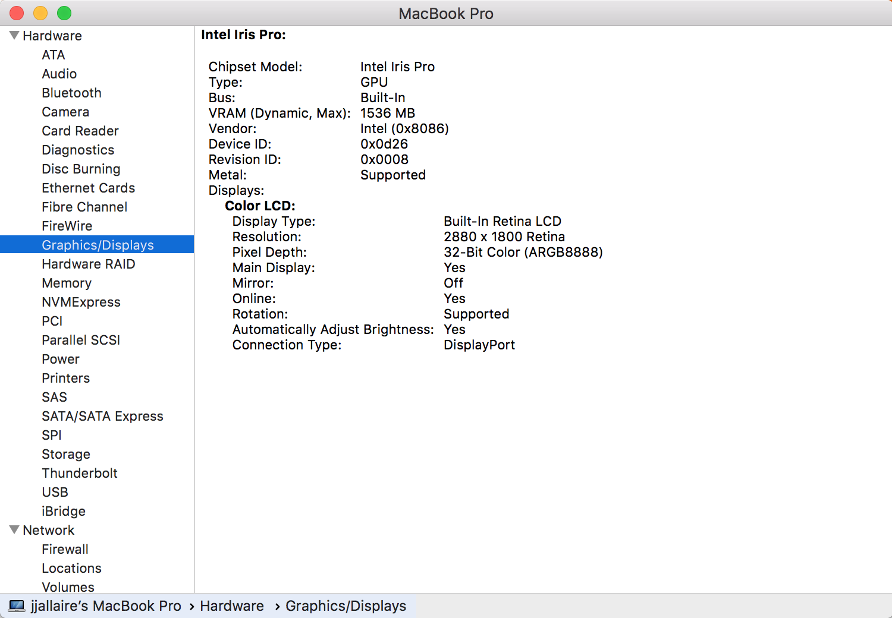

TensorFlow can be configured to run on either CPUs or GPUs. The CPU version is much easier to install and configure so is the best starting place especially when you are first learning how to use TensorFlow. Here’s the guidance on CPU vs. GPU versions from the TensorFlow website:
TensorFlow with CPU support only. If your system does not have a NVIDIA® GPU, you must install this version. Note that this version of TensorFlow is typically much easier to install (typically, in 5 or 10 minutes), so even if you have an NVIDIA GPU, we recommend installing this version first.
TensorFlow with GPU support. TensorFlow programs typically run significantly faster on a GPU than on a CPU. Therefore, if your system has a NVIDIA® GPU meeting the prerequisites shown below and you need to run performance-critical applications, you should ultimately install this version.
So if you are just getting started with TensorFlow you may want to stick with the CPU version to start out, then install the GPU version once your training becomes more computationally demanding.
The prerequisites for the GPU version of TensorFlow on each platform are covered below. Once you’ve met the prerequisites installing the GPU version in a single-user / desktop environment is as simple as:
If you are using Keras you can install both Keras and the GPU version of TensorFlow with:
Note that on all platforms you must be running an NVIDIA® GPU with CUDA® Compute Capability 3.5 or higher in order to run the GPU version of TensorFlow. See the list of CUDA-enabled GPU cards.
This article describes how to detect whether your graphics card uses an NVIDIA® GPU:
Once you’ve confirmed that you have an NVIDIA® GPU, the following article describes how to install required software components including the CUDA Toolkit v10.0, required NVIDIA® drivers, and cuDNN >= v7.4.1:
https://www.tensorflow.org/install/gpu#hardware_requirements
Note that the documentation on installation of the last component (cuDNN v7.4.1) is a bit sparse. Once you join the NVIDIA® developer program and download the zip file containing cuDNN you need to extract the zip file and add the location where you extracted it to your system PATH.
This article describes how to install required software components including the CUDA Toolkit v10.0, required NVIDIA® drivers, and cuDNN >= v7.4.1:
The specifics of installing required software differ by Linux version so please review the NVIDIA® documentation carefully to ensure you install everything correctly.
The following section provides as example of the installation commands you might use on Ubuntu 16.04.
First, install the NVIDIA drivers:
# Add NVIDIA package repositories
# Add HTTPS support for apt-key
sudo apt-get install gnupg-curl
wget https://developer.download.nvidia.com/compute/cuda/repos/ubuntu1604/x86_64/cuda-repo-ubuntu1604_10.0.130-1_amd64.deb
sudo dpkg -i cuda-repo-ubuntu1604_10.0.130-1_amd64.deb
sudo apt-key adv --fetch-keys https://developer.download.nvidia.com/compute/cuda/repos/ubuntu1604/x86_64/7fa2af80.pub
sudo apt-get update
wget http://developer.download.nvidia.com/compute/machine-learning/repos/ubuntu1604/x86_64/nvidia-machine-learning-repo-ubuntu1604_1.0.0-1_amd64.deb
sudo apt install ./nvidia-machine-learning-repo-ubuntu1604_1.0.0-1_amd64.deb
sudo apt-get update
# Install NVIDIA driver
# Issue with driver install requires creating /usr/lib/nvidia
sudo mkdir /usr/lib/nvidia
sudo apt-get install --no-install-recommends nvidia-410
# Reboot. Check that GPUs are visible using the command: nvidia-smiNext install CUDA Toolkit v10.0 and cuDNN v7.4.1 with:
# Install development and runtime libraries (~4GB)
sudo apt-get install --no-install-recommends \
cuda-10-0 \
libcudnn7=7.4.1.5-1+cuda10.0 \
libcudnn7-dev=7.4.1.5-1+cuda10.0Note that it’s important to download CUDA 10.0 (rather than CUDA 10.1, which may be the choice initially presented) as v10.0 is what TensorFlow is built against.
You can see more for the installation here.
On Linux, part of the setup for CUDA libraries is adding the path to the CUDA binaries to your PATH and LD_LIBRARY_PATH as well as setting the CUDA_HOME environment variable. You will set these variables in distinct ways depending on whether you are installing TensorFlow on a single-user workstation or on a multi-user server. If you are running RStudio Server there is some additional setup required which is also covered below.
In all cases these are the environment variables that need to be set/modified in order for TensorFlow to find the required CUDA libraries. For example (paths will change depending on your specific installation of CUDA):
In a single-user environment (e.g. a desktop system) you should define the environment variables within your ~/.profile file. It’s necessary to use ~/.profile rather than ~/.bashrc, because ~/.profile is read by desktop applications (e.g. RStudio) as well as terminal sessions whereas ~/.bashrc applies only to terminal sessions.
Note that you need to restart your system after editing the ~/.profile file for the changes to take effect. Note also that the ~/.profile file will not be read by bash if you have either a ~/.bash_profile or ~/.bash_login file.
To summarize the recommendations above:
Define CUDA related environment variables in ~/.profile rather than ~/.bashrc;
Ensure that you don’t have either a ~/.bash_profile or ~/.bash_login file (as these will prevent bash from seeing the variables you’ve added into ~/.profile);
Restart your system after editing ~/.profile so that the changes take effect.
In a multi-user installation (e.g. a server) you should define the environment variables within the system-wide bash startup file (/etc/profile) so all users have access to them.
If you are running RStudio Server you need to also provide these variable definitions in an R / RStudio specific fashion (as RStudio Server doesn’t execute system profile scripts for R sessions).
To modify the LD_LIBRARY_PATH you use the rsession-ld-library-path in the /etc/rstudio/rserver.conf configuration file
/etc/rstudio/rserver.conf
You should set the CUDA_HOME and PATH variables in the /usr/lib/R/etc/Rprofile.site configuration file:
/usr/lib/R/etc/Rprofile.site
Sys.setenv(CUDA_HOME="/usr/local/cuda")
Sys.setenv(PATH=paste(Sys.getenv("PATH"), "/usr/local/cuda/bin", sep = ":"))In a server environment you might also find it more convenient to install TensorFlow into a system-wide location where all users of the server can share access to it. Details on doing this are covered in the multi-user installation section below.
As of version 1.2 of TensorFlow, GPU support is no longer available on Mac OS X. If you want to use a GPU on Mac OS X you will need to install TensorFlow v1.1 as follows:
However, before you install you should ensure that you have an NVIDIA® GPU and that you have the required CUDA libraries on your system.
While some older Macs include NVIDIA® GPU’s, most Macs (especially newer ones) do not, so you should check the type of graphics card you have in your Mac before proceeding.
Here is a list of Mac systems which include built in NVIDIA GPU’s:
https://support.apple.com/en-us/HT204349
You can check which graphics card your Mac has via the System Report button found within the About This Mac dialog:

The MacBook Pro system displayed above does not have an NVIDIA® GPU installed (rather it has an Intel Iris Pro).
If you do have an NVIDIA® GPU, the following article describes how to install the base CUDA libraries:
http://docs.nvidia.com/cuda/cuda-installation-guide-mac-os-x/index.html
You also need to intall the cuDNN library 5.1 library for OS X from here:
https://developer.nvidia.com/cudnn
After installing these components, you need to ensure that both CUDA and cuDNN are available to your R session via the DYLD_LIBRARY_PATH. This typically involves setting environment variables in your .bash_profile as described in the NVIDIA documentation for CUDA and cuDNN.
Note that environment variables set in .bash_profile will not be available by default to OS X desktop applications like R GUI and RStudio. To use CUDA within those environments you should start the application from a system terminal as follows:
In a single-user desktop environment you can install TensorFlow with GPU support via:
If this version doesn’t load successfully you should review the prerequisites above and ensure that you’ve provided definitions of CUDA environment variables as recommended above.
See the main installation article for details on other available options (e.g. virtualenv vs. conda installation, installing development versions, etc.).
In a multi-user server environment you may want to install a system-wide version of TensorFlow with GPU support so all users can share the same configuration. To do this, start by following the directions for native pip installation of the GPU version of TensorFlow here:
https://www.tensorflow.org/install/install_linux#InstallingNativePip
There are some components of TensorFlow (e.g. the Keras library) which have dependencies on additional Python packages.
You can install Keras and it’s optional dependencies with the following command (ensuring you have the correct privilege to write to system library locations as required via sudo, etc.):
If you have any trouble with locating the system-wide version of TensorFlow from within R please see the section on locating TensorFlow.